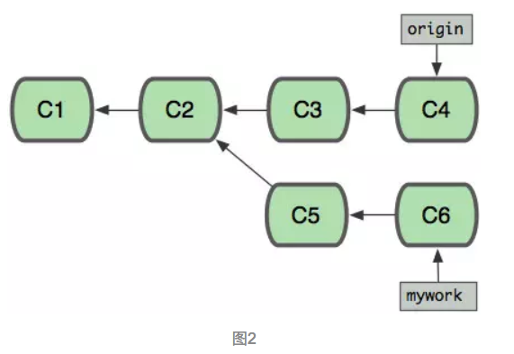
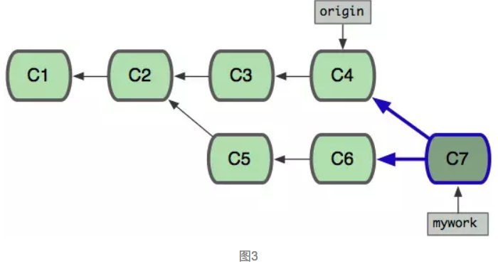
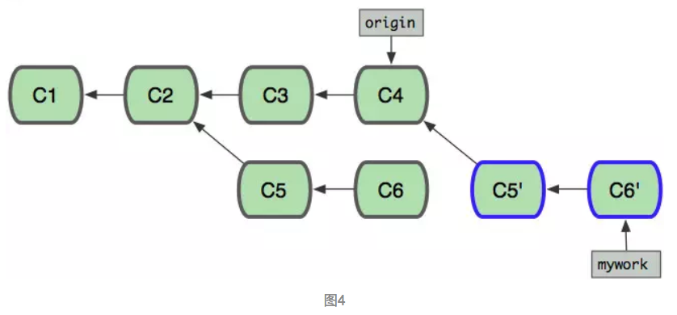
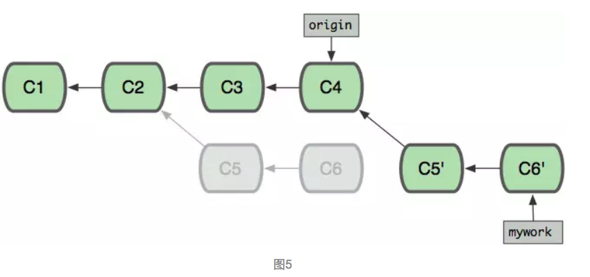
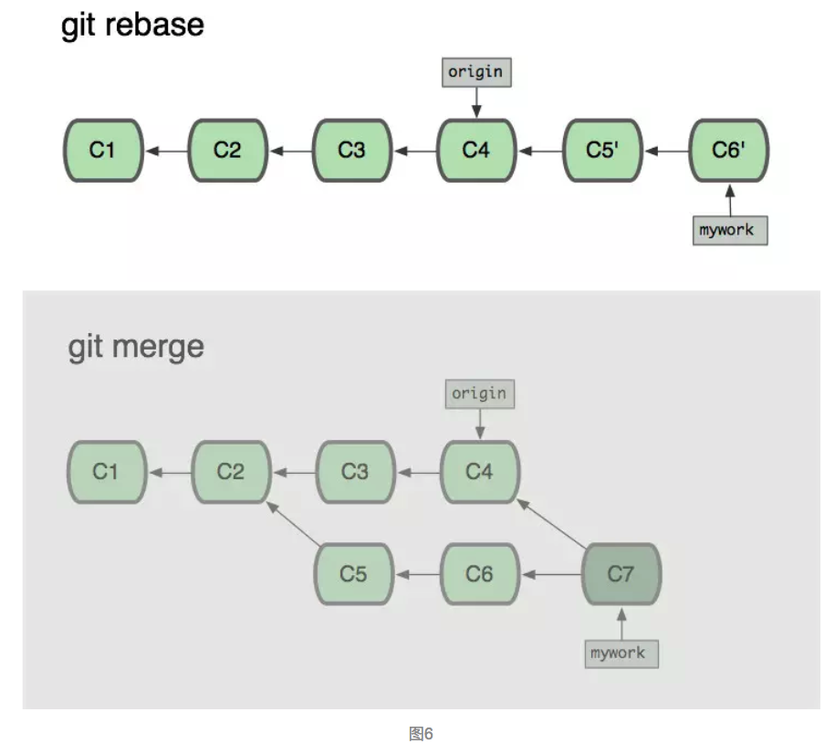

合并与变基
This page updated at: 2018/09/05
转载自：烟雨随风 @ https://www.jianshu.com/p/cca69cb695a6
git rebase用于把一个分支的修改合并到当前分支。 假设你现在基于远程分支"origin"，创建一个叫"mywork"的分支。
git checkout -b mywork origin
假设远程分支"origin"已经有了2个提交，如图

现在我们在这个分支做一些修改，然后生成两个提交(commit).
- 修改文件
- git commit
- 修改文件
- git commit
但是与此同时，有些人也在"origin"分支上做了一些修改并且做了提交了. 这就意味着"origin"和"mywork"这两个分支各自"前进"了，它们之间"分叉"了

在这里，你可以用"pull"命令把"origin"分支上的修改拉下来并且和你的修改合并； 结果看起来就像一个新的"合并的提交"(merge commit):

但是，如果你想让"mywork"分支历史看起来像没有经过任何合并一样，你也许可以用 git rebase:
git checkout mywork
git rebase origin
这些命令会把你的"mywork"分支里的每个提交(commit)取消掉，并且把它们临时 保存为补丁(patch)(这些补丁放到".git/rebase"目录中),然后把"mywork"分支更新 为最新的"origin"分支，最后把保存的这些补丁应用到"mywork"分支上。

当'mywork'分支更新之后，它会指向这些新创建的提交(commit),而那些老的提交会被丢弃。 如果运行垃圾收集命令(pruning garbage collection), 这些被丢弃的提交就会删除. （请查看 git gc)

解决冲突
在rebase的过程中，也许会出现冲突(conflict). 在这种情况，Git会停止rebase并会让你去解决 冲突；在解决完冲突后，用"git-add"命令去更新这些内容的索引(index), 然后，你无需执行 git-commit,只要执行:
git rebase --continue
这样git会继续应用(apply)余下的补丁。 在任何时候，你可以用--abort参数来终止rebase的行动，并且"mywork" 分支会回到rebase开始前的状态。
git rebase --abort
rebase和merge的区别
现在我们可以看一下用合并(merge)和用rebase所产生的历史的区别：

当我们使用Git log来参看commit时，其commit的顺序也有所不同
假设C3提交于9:00AM,C5提交于10:00AM,C4提交于11:00AM，C6提交于12:00AM,
对于使用git merge来合并所看到的commit的顺序（从新到旧）是：C7 ,C6,C4,C5,C3,C2,C1
对于使用git rebase来合并所看到的commit的顺序（从新到旧）是：C7 ,C6‘,C5',C4,C3,C2,C1
因为C6'提交只是C6提交的克隆，C5'提交只是C5提交的克隆，从用户的角度看使用git rebase来合并后所看到的commit的顺序（从新到旧）是：C7 ,C6,C5,C4,C3,C2,C1
另外，我们在使用git pull命令的时候，可以使用--rebase参数，即git pull --rebase,这里表示把你的本地当前分支里的每个提交(commit)取消掉，并且把它们临时 保存为补丁(patch)(这些补丁放到".git/rebase"目录中),然后把本地当前分支更新 为最新的"origin"分支，最后把保存的这些补丁应用到本地当前分支上。
使用方式：
git pull --rebase <远程主机名> <远程分支名>:<本地分支名>